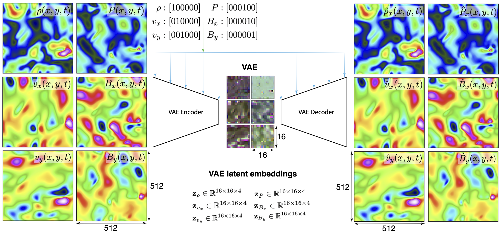

Figure 2: Illustration of SGA. SGA uses a shared attention score matrix 𝓐 \bm{\mathcal{A}} to model common attention patterns and an input-dependent residual score matrix 𝓡 t \bm{\...
Figure 2 : Overview of Sunta . During inference (left), observations are encoded into low-level states and segmented into chunks at points of high prediction error. A bottom-up enc...
补录新增。它面向磁流体多场演化，利用正向/反向时间流的一致性做无真值误差和不确定性估计，并提出用稀疏诊断或有限视角进行自适应反馈；这是本轮最强的聚变 AI 交叉条目。
研究背景
由原简报的核心问题、选取理由和相关性整理，不替代原文背景综述。
MHD 多场演化包含密度、压强、速度和磁场等耦合场，真实实验中又常只有稀疏诊断或有限视角。仅靠前向预测很难知道模型在无真值测试时是否可信，也难以把少量观测用于在线校正。
从本日报的选取理由看，补录新增。它面向磁流体多场演化，利用正向/反向时间流的一致性做无真值误差和不确定性估计，并提出用稀疏诊断或有限视角进行自适应反馈；这是本轮最强的聚变 AI 交叉条目。
核心问题
如何用同一生成模型同时做 MHD 前向演化、逆向重构、无真值不确定性估计，并利用稀疏诊断进行自适应反馈？
对当前主题的关键意义在于：可把正反向一致性迁移为破裂预测的无真值置信度估计：用历史诊断预测未来风险，再反向重构历史状态，反向误差作为在线不确定性；也可用稀疏可见光或磁测量对 latent state 做 feedback。
方法与关键创新

Figure 1: Conditional diffusion overview. Each MHD field is encoded into its own lower-dimensional latent representation.
这是本轮聚变 AI 最值得精读的论文，尤其适合作为 P3 中“诊断时序 + 有限视角图像/场重构 + 不确定性”的机制来源。
研究相关性与启发
可把正反向一致性迁移为破裂预测的无真值置信度估计：用历史诊断预测未来风险，再反向重构历史状态，反向误差作为在线不确定性；也可用稀疏可见光或磁测量对 latent state 做 feedback。
02
可控核聚变 / 等离子体控制 / 诊断与预测
直接 tokamak disruption / visible diagnostics 新稿不足
本轮未收录直接新增论文
2026-07-06 检索截止前未发现合格新增empty
本轮空缺判断。tokamak、disruption prediction、fusion diagnostics、visible/IR/ECEI/BES、plasma control 定向检索中，近期新增主要是硬 X 射线探测、RMP、撕裂模、粒子排出和聚变工程物理论文；除 Bidirectional Latent Diffusion for MHD 外，未发现新的直接破裂预测或可见光-诊断时序融合 AI 条目。
本轮空缺判断。tokamak、disruption prediction、fusion diagnostics、visible/IR/ECEI/BES、plasma control 定向检索中，近期新增主要是硬 X 射线探测、RMP、撕裂模、粒子排出和聚变工程物理论文；除 Bidirectional Latent Diffusion for MHD 外，未发现新的直接破裂预测或可见光-诊断时序融合 AI 条目。
研究背景
由原简报的核心问题、选取理由和相关性整理，不替代原文背景综述。
聚变 AI 近期重点仍是实验无关破裂预测、跨装置平衡神经算子、ECH 沉积控制、逃逸电子层级建模和 MHD surrogate/diagnostic。直接可见光图像与诊断时序融合的公开新稿仍稀缺。
从本日报的选取理由看，本轮空缺判断。tokamak、disruption prediction、fusion diagnostics、visible/IR/ECEI/BES、plasma control 定向检索中，近期新增主要是硬 X 射线探测、RMP、撕裂模、粒子排出和聚变工程物理论文；除 Bidirectional Latent Diffusion for MHD 外，未发现新的直接破裂预测或可见光-诊断时序融合 AI 条目。
Figure 2 : Overview of the EADP. EADP acts as a plug-and-play module compressing N N visual tokens into a highly informative subset of K K tokens for the downstream LLM. Stage 1 : ...
Figure 1 : Compression strategies and their robustness-compute trade-off. Left: token compression reduces the number of processed tokens, structural pruning reduces model width/cap...

![Figure 2 : Overview of Sunta . During inference (left), observations are encoded into low-level states and segmented into chunks at points of high prediction error. A bottom-up encoder aggregates each chunk into a single latent state for high-level dynamics modeling. During generation (right), the high-level model produces high-level states that are decoded into low-level sequences. Chunk boundaries are detected via top-down surprise, which measures the mismatch between low-level rollouts and high-level context, enabling dynamic chunking without ground-truth observations.](../assets/figures/fe30ff8a1778ffcf.png)
![Figure 2 : Overview of the EADP. EADP acts as a plug-and-play module compressing N N visual tokens into a highly informative subset of K K tokens for the downstream LLM. Stage 1 : An entropy-guided denoising mechanism filters out high-entropy textual noise to get the dense guidance score S D S^{D} . This is fused with the global EOS score S G S^{G} to yield a robust instruction relevance score S I S^{I} . Stage 2 : After refining S I S^{I} via gaussian smoothing and score polarization to prevent feature fragmentation, a submodular maximization objective uses inter-token visual similarity to select the final subset 𝒴 \mathcal{Y} .](../assets/figures/17f374c5a4427890.png)
![Figure 1 : Compression strategies and their robustness-compute trade-off. Left: token compression reduces the number of processed tokens, structural pruning reduces model width/capacity, and our prune-then-merge pipeline combines both techniques. Right: a summary view of the robustness-compute trade-off on ADE20K-C, measured by corrupted-input mIoU versus compute. Token compression can preserve performance at mild reductions but drops sharply in the high-compression regime. Structural pruning degrades more smoothly, while prune-then-merge provides a stronger trade-off at comparable FLOPs.](../assets/figures/4a5ab6067e6bcd10.png)